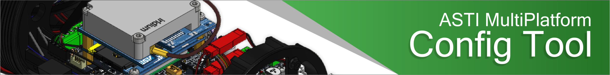

Connect
Acquire Settings
Select station type to configure:
DEWS Rain Gauge
DEWS Waterlevel
DEWS Tandem
DEWS IDP only
DEWS IDP w/ GSM
DEWS Alerting Station
ABOITIZ
BSWM
Radar Waterlevel
Radar Tandem
TEWS Detection
TEWS Warning
Configure arQ1010
ASTI Multiplatform Config Tool Copyright 2016. All rights reserved.
Send Serial